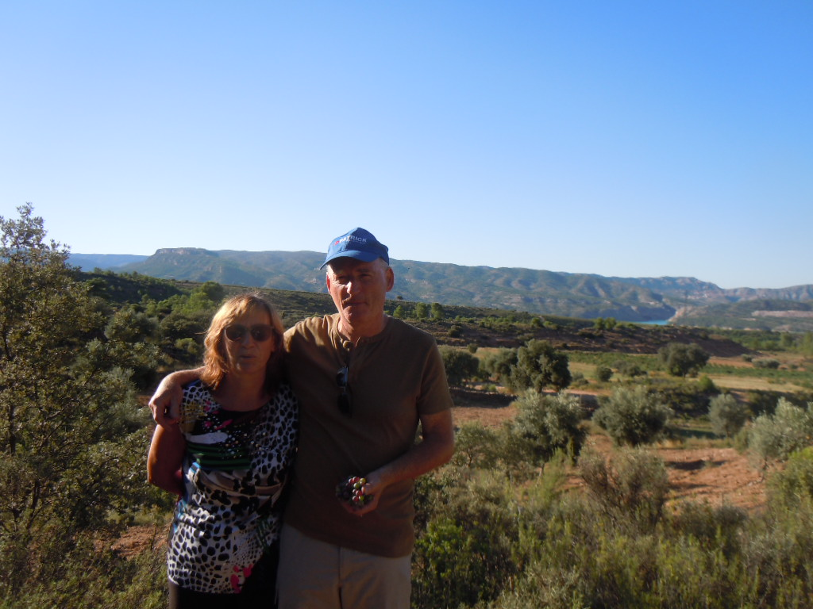
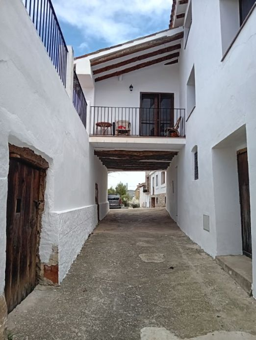
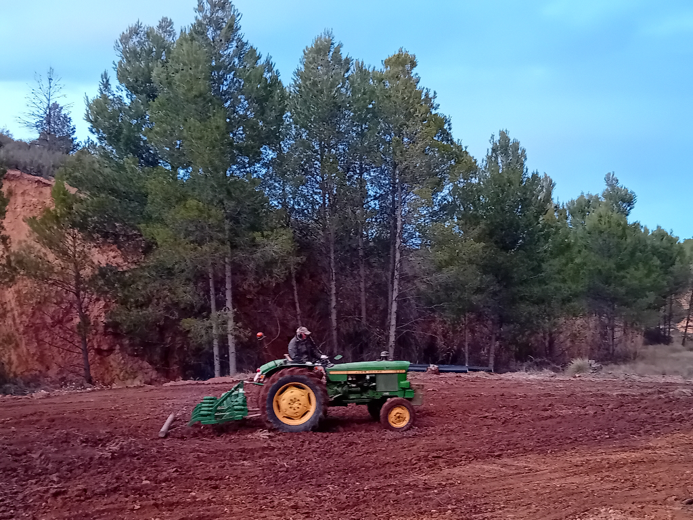
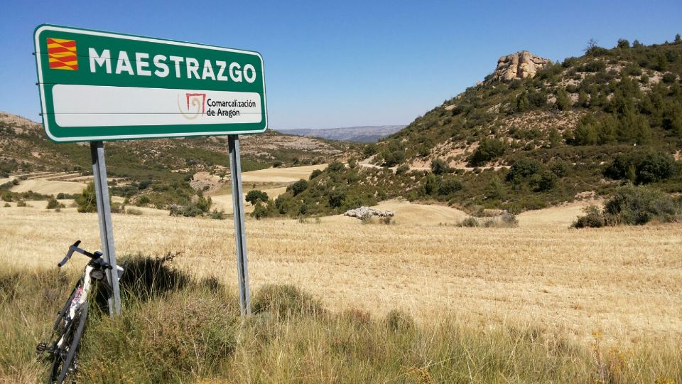
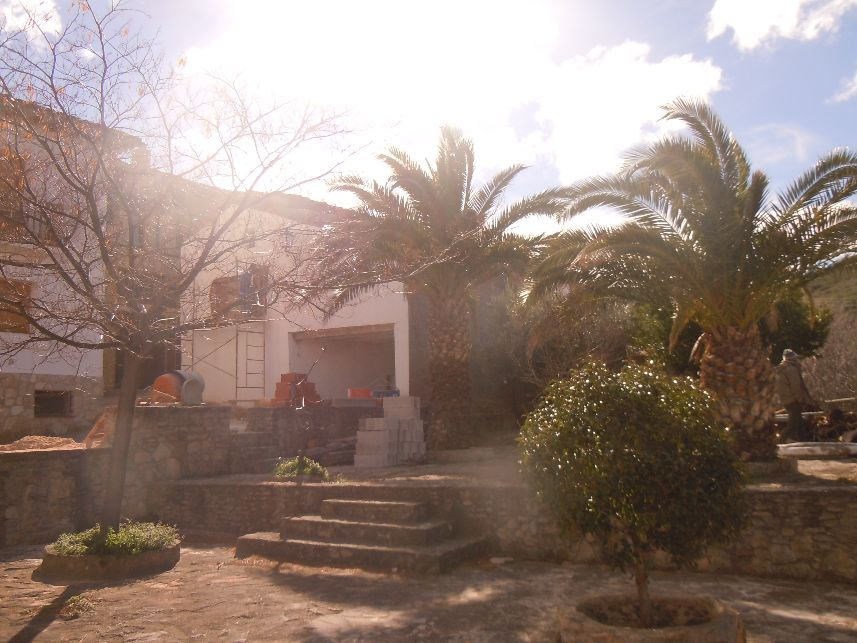
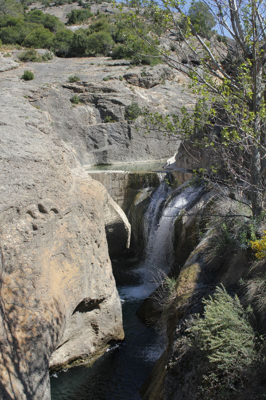
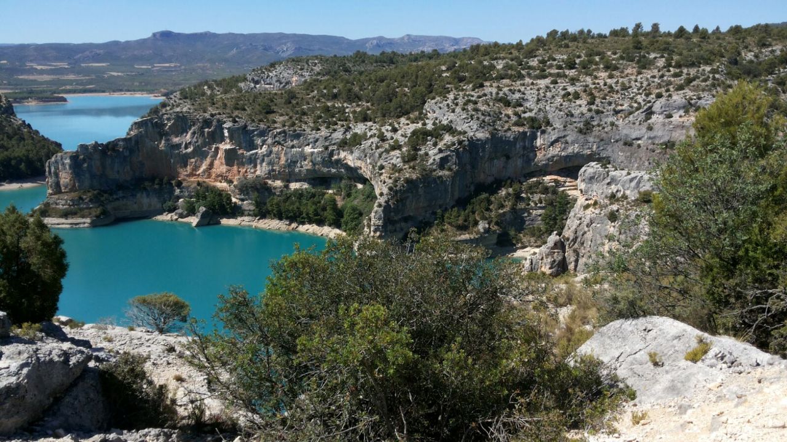

Nadat we jarenlang, gedurende vele zomers, weekends en schoolvakanties zowat alle regio’s van Spanje doorkruist hadden, alleen of samen met de twee, zes of acht kinderen, werd stilaan duidelijk dat de Maestrazgo onze meest geliefde streek van Spanje aan het worden was.
Wij aan de finca Uno
Onze staptochten in 2010 van Teruel naar Cantavieja en in 2011 van Fortanete naar Molinos via de GR gaven hierbij echt wel de doorslag. Het was een unieke ervaring om te stappen en te klimmen door de ruige landschappen, tussen de steile ravijnen afgewisseld met uitgestrekte weiden en dennenbossen en ontvangen te worden in de pittoreske, gastvrije bergdorpen. Zo werd ook de droom om in de Maestrazgo een vaste verblijfplaats te hebben, steeds concreter.
In de zomer van 2012 gingen we via een lokaal agentschap op zoek naar een huis in de provincie Teruel. We bezochten verschillende huizen, wikten en wogen en kochten uiteindelijk een ruïne in het dorpje Las Planas de Castellote. Dankzij de goede samenwerking tussen de verkoper Federico (ook uit het dorp afkomstig), de architect Diego en zijn vader-aannemer Fabian was een jaar later, in juli 2013, de renovatie afgewerkt en konden we aan het nieuwe avontuur beginnen.
Ons huis na de verbouwingen
De eerste zomer leerden we vooral veel mensen in het dorp kennen. We werden er warm onthaald en maakten onze eerste dorpsfeesten mee. We verkenden de omgeving verder, gingen zwemmen, kayakken op het meer en deden vele bergwandelingen in het rustgevende en prachtige natuurlandschap.
Al gauw gingen Dirks handen kriebelen om ook iets actief in de omgeving te gaan doen en dat had Federo, een van de lokale landbouwers, snel door. In 2015 stelde hij ons voor een kleine olijfboomgaard en een tractor te kopen zodat we zelf aan de slag konden gaan. Het leek ons wel een optie. Op die manier konden we actief onze bijdrage aan de lokale gemeenschap leveren, zelf een ecologisch en lekker product maken en de omgeving mee leefbaar houden. Sindsdien zijn we er niet meer weg te slaan.
Met de tractor op Finca Caseta
Het dorp en de omgeving van de finca's
El Maestrazgo is de streek waar we ons hart verloren. De finca's liggen er, net zoals het dorp waar we wonen, Las Planas de Castelotte.
El Maestrazgo
De Maestrazgo (in het Valenciaans El Maestrat) is een historische Spaanse regio die zich uitstrekt over het noorden van de Valenciaanse provincie Castellón en het zuidoosten van de Aragonese provincie Teruel. De naam Maestrazgo is afgeleid van "Maestres" of meesters en verwijst naar de tempeliers, die in de middeleeuwen een belangrijke rol speelden bij de herovering van het gebied op de Moren. De Maestrazgo omvat een oud gebergte van geologische waarde met ruwe landschappen.
In de provincie Castellón bestaat de Maestrazgo uit drie territoriale afbakeningen: de comarcas Bajo Maestrazgo met zijn hoofdstad in Vinaroz, Alto Maestrazgo met zijn hoofdstad in Albocácer en Los Puertos de Morella met zijn hoofdstad in Morella. Het historische grondgebied van Maestrazgo in Castellón omvat ook de steden Alcalatén en Plana Alta.
In de provincie Teruel is er sinds 1999 een regio die officieel Maestrazgo heet, maar historisch gezien maakten plaatsen uit andere regio's van Bajo-Aragón en Matarraña er ook deel van uit. De hoofdstad van deze Maestrazgo-regio is Cantavieja.
De streek Maestrazgo
In 1972 werd de Mancomunidad Turística del Maestrazgo opgericht, die 57 gemeenten in de provincies Teruel en Castellón omvatte.Op 22 februari 2012 hebben de overheden van Castellón en Teruel de Mancomunidad Turística del Maestrazgo ontbonden, veertig jaar na haar oprichting.
In 2005 erkent de Unesco het Geoparque Maestrazgo rond de rivier de Guadalope en haar bijrivieren. 43 gemeenten van Teruel maken hier deel van uit. In een geopark zorgt men voor het behoud van het geologisch erfgoed in een duurzaam milieuperspectief.
bron: Ayuntamiento de Albocácer
Las Planas de Castelotte
Las Planas is een gehucht van Castellote. Er wonen slechts 10 personen permanent maar in de zomer kan het aantal bewoners oplopen tot 200. Las Planas ligt 650 meter boven de zeespiegel.
Eén van de gezellige dorpspleintjes in Las Planas.
Het dorpje ligt vlakbij het stuwmeer van Santolea en is gebouwd rond de parochiekerk van San Marcos (17e eeuw) en zijn calvarieberg. In de omgeving zijn er kleine en mooie gehuchten zoals El Huergo, El Perogil, El Alconzal en Los Alagones.
Waterval aan El Huergo
De bodega Borraz van onze buren Mayte en Tomás produceert wijnen. Je kan er proeven en kopen. De wijngaarden die ze zelf bewerken en oogsten, liggen in de directe omgeving van het dorp.
bron: Ayuntamiento de Castellote
Stuwmeer van Santolea - vlakbij Las Planas - op de rivier Guadalope